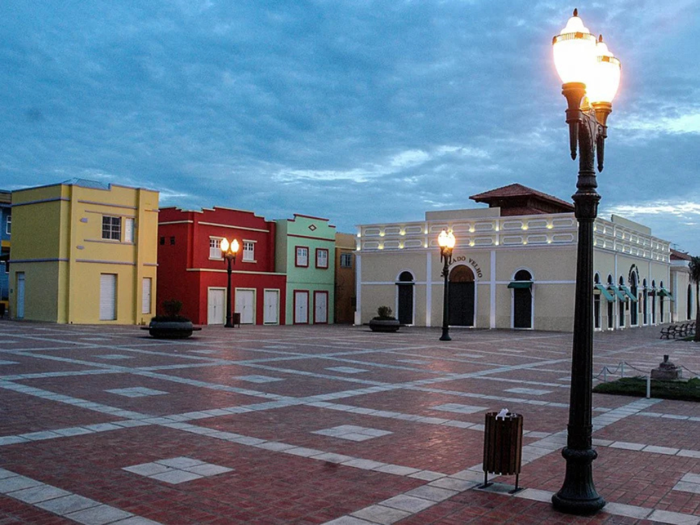

O estado do Acre está localizado no extremo oeste da Região Norte do Brasil e é conhecido por sua forte ligação com a Floresta Amazônica e pela história da luta dos povos da floresta. Fazendo fronteira com o Peru e a Bolívia, o Acre possui grande riqueza ambiental, com extensas áreas de mata preservada e biodiversidade abundante. Sua capital, Rio Branco, concentra a maior parte da população e das atividades econômicas do estado. O Acre também ganhou destaque nacional pela atuação do líder ambientalista Chico Mendes, símbolo da defesa da Amazônia e das comunidades extrativistas. A cultura acreana reúne influências indígenas, nordestinas e amazônicas, presentes nas tradições, na música e na culinária local.
